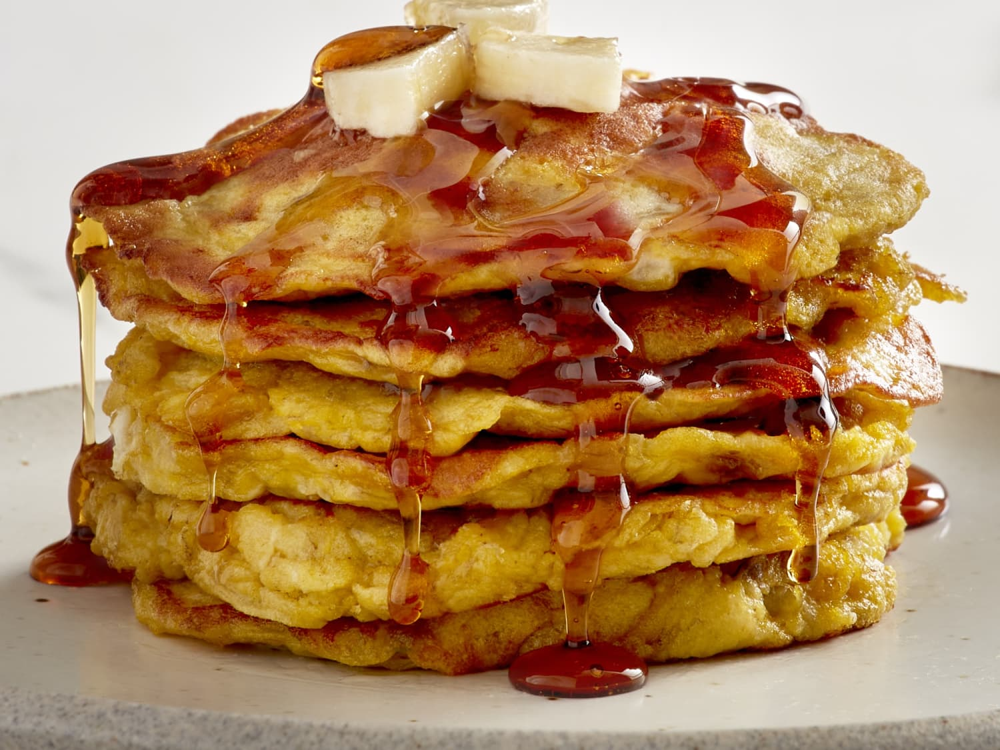

Banana Pancakes

These are easy to make and a great way to use up old bananas. By adding protein powder,
these pack a nutritionally dense morning breakfast and are quick to make.
Ingredients
- 2 large or 3 small bananas
- 2 eggs
- 2 tablespoons melted butter
- Half cup protein poweder (can substitute white flour)
- Half cup rolled oats
- 2 teaspoons baking powder
- Splash of vanilla
- Teaspoon of cinnamon poweder
Instructions
- Mash bananas with a fork until a smooth consistency.
- Mix in eggs and beat together
- Pour in butter slowely while mixing. This ensures that the hot butter
does not cook the eggs. Butter should also be allowed to cool slightly if hot.
- Add the remaining ingredients and whisk together
- Allow the batter to rest for at least 10 minutes. This will allow the rolled oats
to absorb some of the moister and creates a better consistency.
- Cook on a lightly oiled pan at low heat
- I like to top the pancakes with peanut butter. Feel free to use nutella,
syrup, honey or fresh fruit instead.